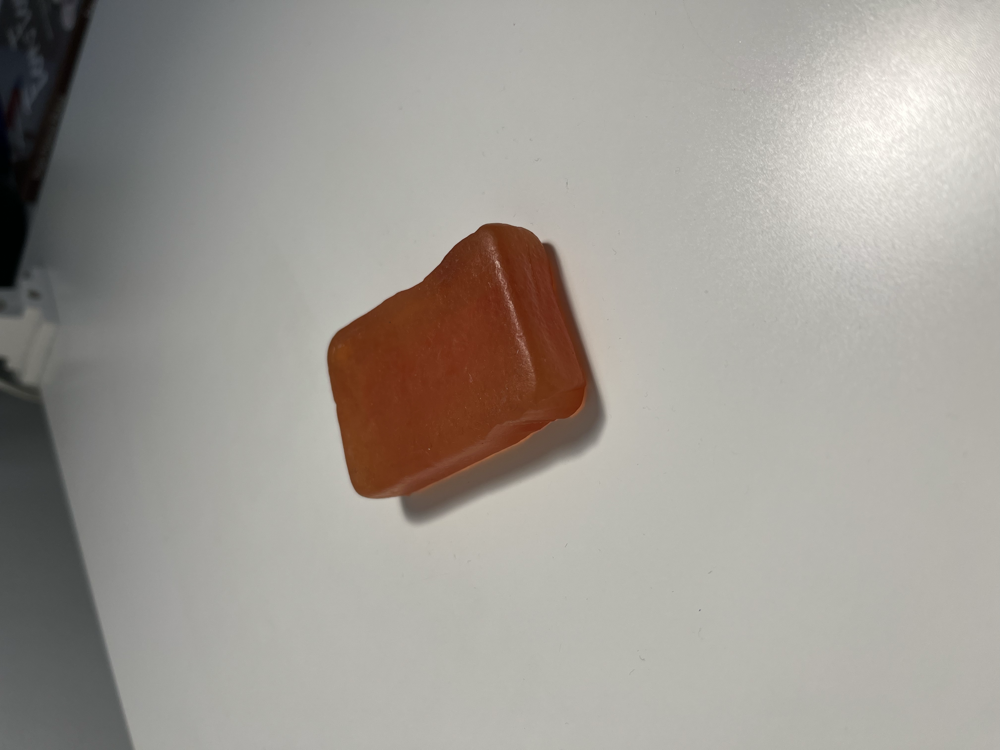
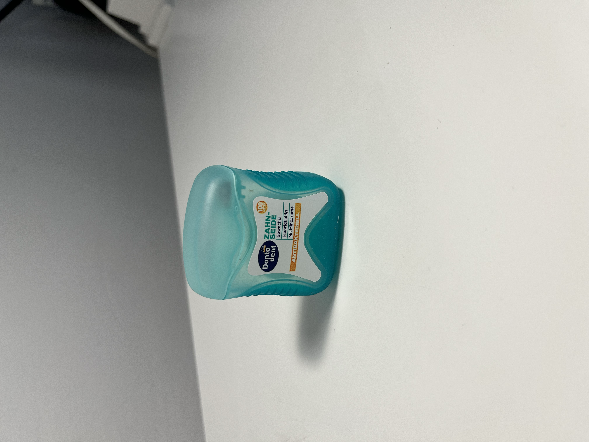
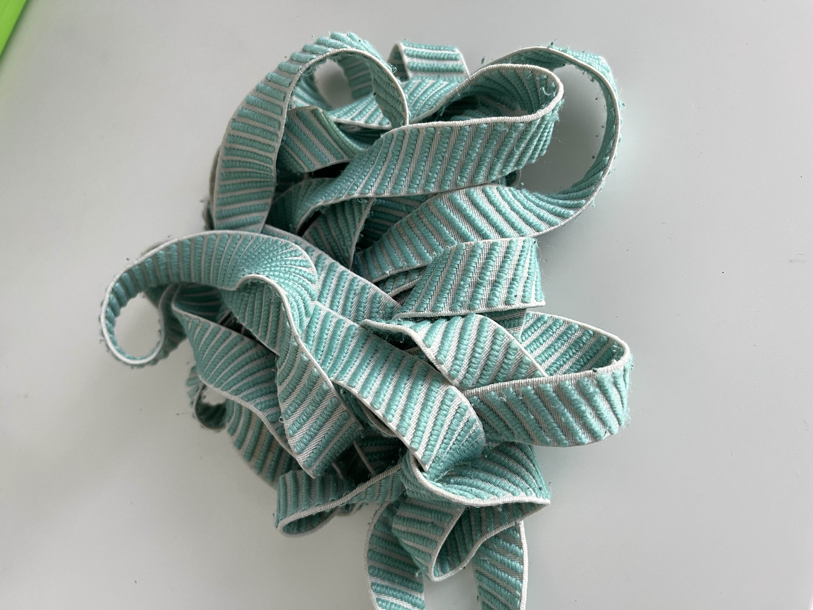
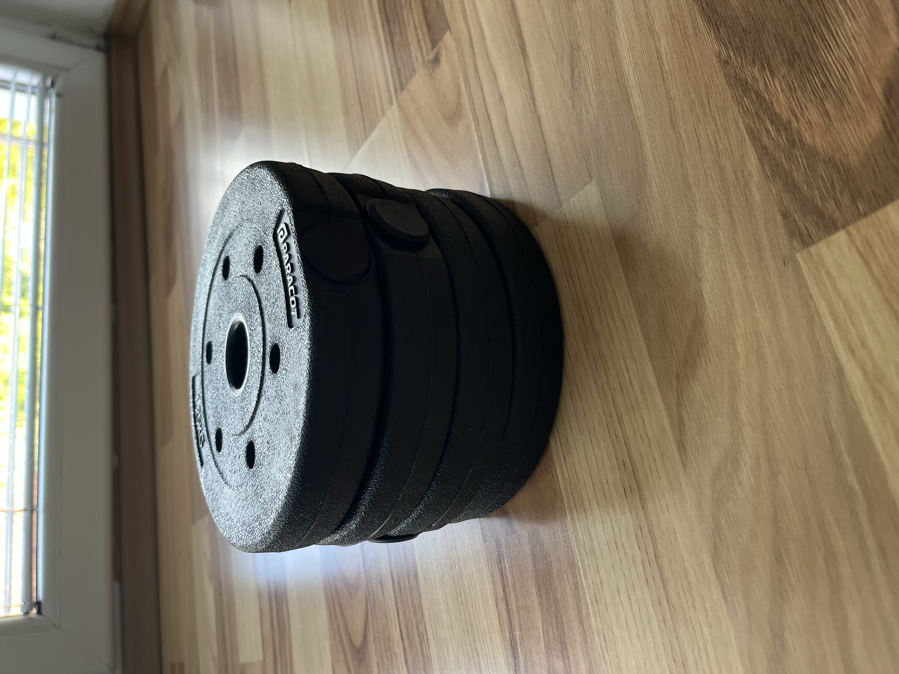
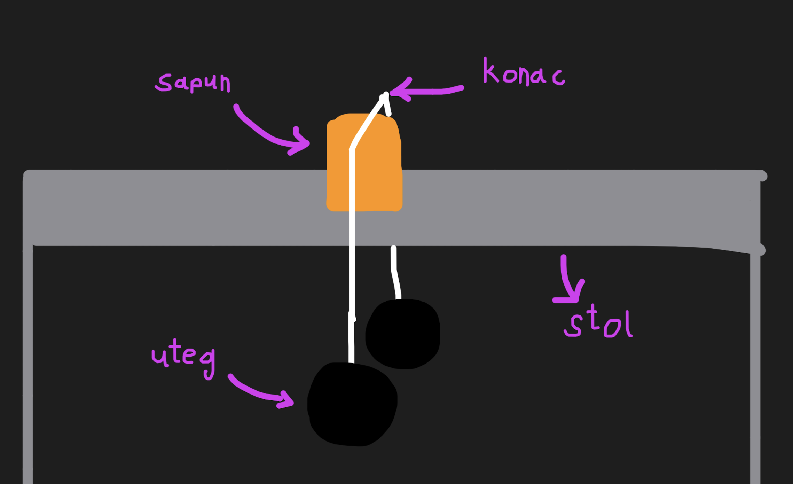
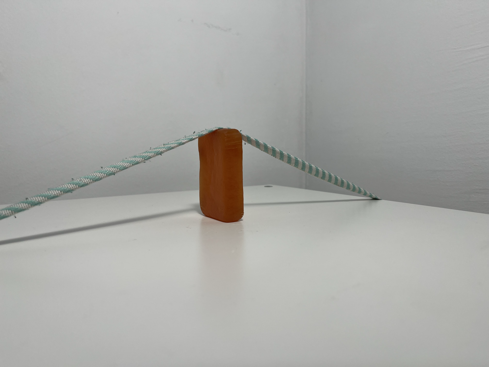

Pokus: ista težina, različit rezultat
Na prošloj stranici postavili smo pitanje zašto tanka ručka vrećice boli puno više od široke naramenice ruksaka, iako nosimo istu težinu. Provjerimo to jednostavnim pokusom kod kuće.
Što ti treba
- komad sapuna ili mekog voska
- tanki konac (npr. zubni konac)
- široka vrpca ili traka
- utezi






Kako izvesti pokus
- Zaveži široku traku oko utega.
- Postavi sapun na stol i prebaci traku preko njega.
- Pusti utege da vise s oba kraja stola.
- Ponovi isto, ali sada omotaj tanki zubni konac oko utega.
- Promatraj što se događa.
Prije nego nastavimo: što misliš, što će se dogoditi kada stavimo konac za zube?